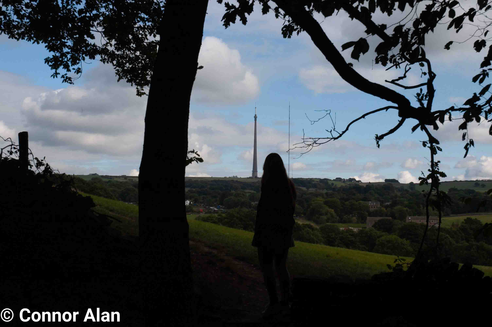
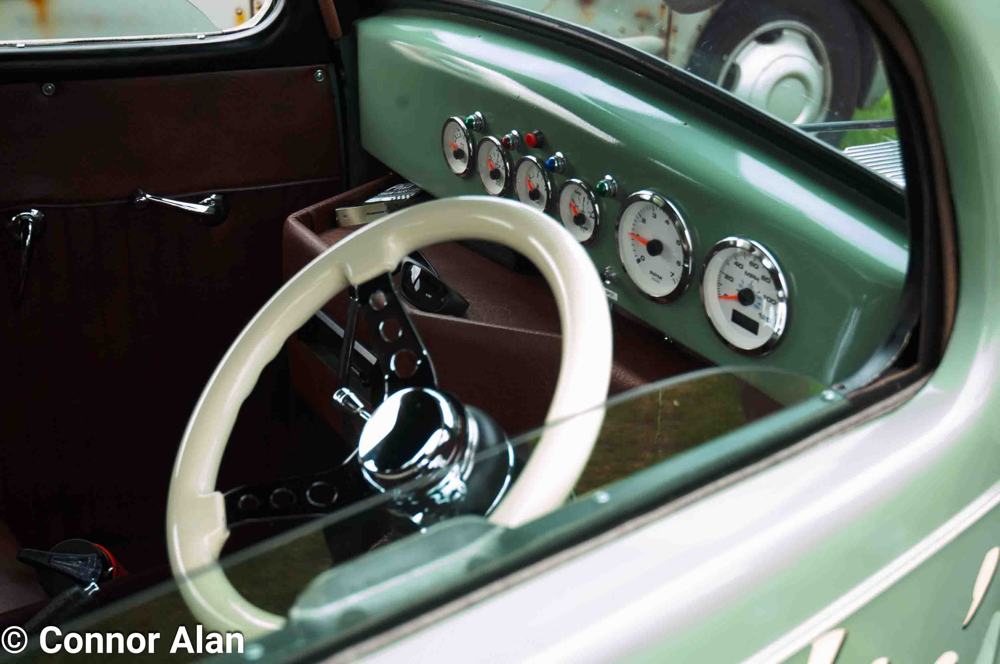

Introduction
I started taking photography seriously back in early 2022 after I found myself enjoying capturing moments with an old digital compact camera I found, after a few months of shooting on this camera I decided that it was worth taking the plunge and buying my own DSLR after experimenting with my Dad's Canon 1100D which I had experienced using back when I was a content creator.
Gear
Cameras: Nikon D100 & Canon EOS 300 (35mm)
Lenses: NIKKOR AI-S 50mm f1.4, Tokina 28mm f1.2 & NIKKOR AF-S DX 18-70mm f3.5-4.5
Filters: Jessops UV Filter & Hoya Skylight 1B Filter
Software: NX Studio & Adobe Photoshop
Portfolio
For ease of use use these navigators to jump to certain parts of my portfolio!
Black and White DigitalColour
35mm
Black and White Digital Photography
All images under this section are taken on digital cameras and are then edited in post to be in black and white

Umbrella-Girl

Jesus Loves You!

Lone-Bicycle

Ash Tray

Cat Street Art

Leeds City Center Skyline

Butterfly on a group of flowers

Stained Glass in Leeds Arcade
Colour
All images under this section are taken on digital cameras that have not been edited into black and white however, they may be edited in post in order to enhance the colours of the photos or to remove any blemishes such as dust from the photos.

Group of Bees pollenating a bunch of flowers

Sunshining through the leaves onto a narrow street

Fleur cafe in Leeds

Flowers on a sunny day

Ford Escort

Overgrown path

Bridge over a small river

Close up of Volkswagen

Honda Civic EG6 at a Car Show

Mustang at a Car Show
Pocket Bully with black and white background

View of Emley Moor Mast
View of Emley Moor Mast towers with model infront
Steering wheel of a classic car
35mm
Photos under this section are taken using the Canon EOS 300 using colour film none of them have been edited in post these are the exact scans that have been developed.

Multi-coloured bunting over a garden

Castle Hill on the Horizon

Skyline with Castle Hill in the distance

Sun shining over corn field

Swinging from tree

Overview of Syngenta
^ Back to Top ^